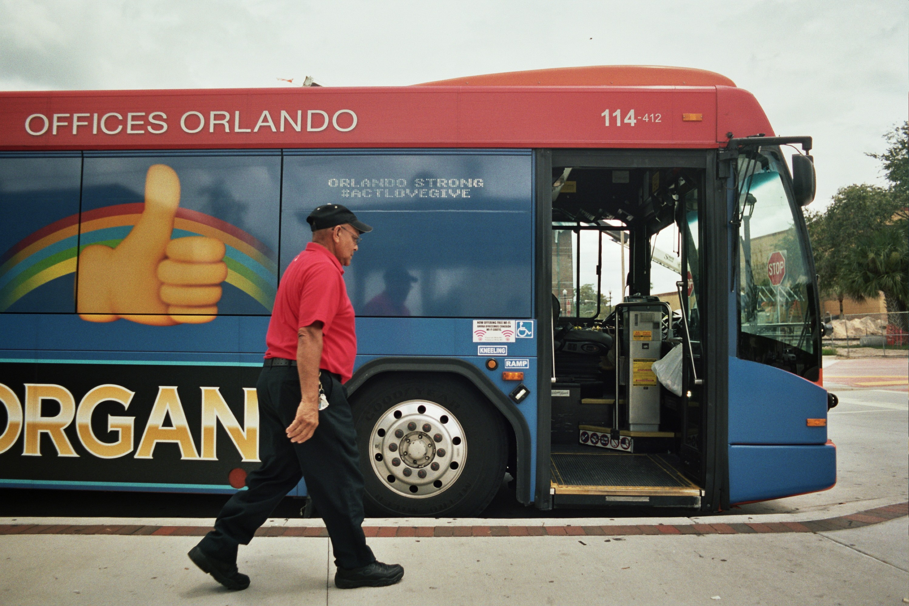

Uber is an app that lets your request a ride right where you're at. You can let a driver know where you are and they will pick you up and bring you to your destination. On average, the cost per mile is two dollars, with trips starting at one dollar base rates and ranging between one and two dollars per mile. |
|

|
A taxi service is great way to get around Orlando. However, it is a little more expensive than uber. The cost is generally around two dollars and fifty cents per mile with a two to four dollar fee for the initial pick-up and a rate for idle time. |

People can rent devices such as bikes or scooters, equipped with GPS technology, without the need to return them to a specific location. The city of Orlando collects a twenty-five cent fee to ride. Devices should be parked upright at all times. Don't block the flow of traffic or pedestrians. |
|  | This local bus service provides transportation throughout the City of Orlando. LYNX accommodates an average of ninety thousand passenger trips per day. One trip costs two dollars. You can also get a "All-Day Pass" which is four and a half dollars. |
Make sure you can arrive to your destinations!